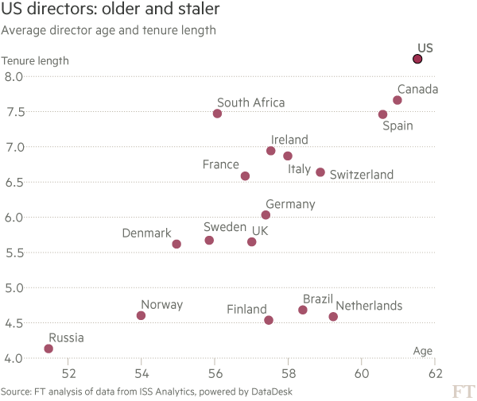
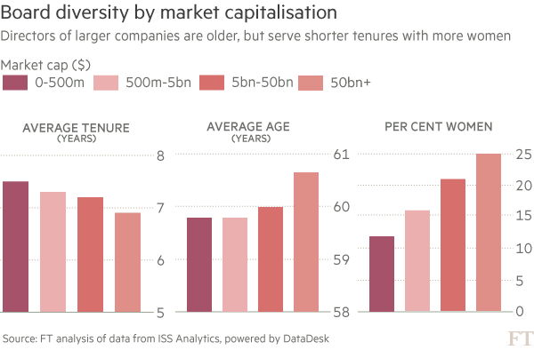

FT investigation reveals the average US board director is older, serving a longer tenure and more likely to be male
When Chipotle Mexican Grill suffered a string of food safety problems last year, including outbreaks of e-coli and salmonella, it quickly shut restaurants, brought in outside inspectors and revamped its hygiene regime, but sales are still in sharp decline and the company’s stock is down by more than two-fifths. For some shareholders, the blame lies squarely with the company’s board, and the burrito chain is a poster child for campaigners who say America’s “male, pale and stale” boardrooms are failing to protect investors’ interests.
Investors staged one of the biggest revolts against a corporate director at Chipotle’s annual meeting in May, 30 per cent of them opposing the reelection of Patrick Flynn, who runs the committee in charge of nominating new directors. His has not been a very busy committee; the average tenure of a Chipotle director is 13 years, five years more than the US average. Half the directors have been aboard for more than 17 of its 23-year history. CtW Investment Group, which represents US union pension funds, called it an “insular” board which had not expanded its skills in parallel with the growth of the company.
Shareholders have long fought to get the basics of boardroom accountability right. Annual elections for all directors have become the norm, with the requirement that directors need majority support to stay on the board. Yet many investors still express dissatisfaction with the quality of candidates and the makeup of even large companies’ boards, especially in the US, which has been slower to hand shareholders the rights that have been standard elsewhere for years.
A Financial Times analysis of data from the shareholder advisory group ISS Analytics, shows US boards are “maler, staler and frailer” than their European counterparts, having directors who are older on average, stay in post longer and are less likely to be women. There are increasing demands for “board refreshment”, to sweep away the last vestiges of the clubroom atmosphere from years gone by.
“I depend on the individuals inside that room to hold management to task,” says Anne Sheehan, head of corporate governance at Calstrs, the $190bn California teachers’ pension fund. “Having too many people that think alike, act alike, come from the same background — perhaps went to same school or who have all been on other boards together — can lend itself to groupthink. We need directors to ask the tough questions, to probe management and be a little more provocative.”
CtW argued Chipotle needed fresh board members to consider a more radical overhaul of human resources and supply chain practices, and said this was just the latest in a line of governance infractions that previously led to a majority shareholder vote against the company’s executive pay policy. The company says many of its critics were being unfair, but it is interviewing one new board director already and will, according to a spokesman, “consider additional board changes to meet longer term needs”.
American investors sharpened their critique of corporate boards after the financial crisis, which revealed how little directors might know about the risks building inside the institutions they are charged with governing.
Demands for board refreshment usually explode into the open after a scandal, or when a company’s performance sours, or if there is an example of egregious executive pay. Shareholders have confronted board members repeatedly in the oil and gas sector, most recently at BP, where shareholders voted down chief executive Bob Dudley’s pay deal this year and Dame Ann Dowling, the head of the remuneration committee, faced calls to resign.
Ms Sheehan singled out energy and mining as sectors where Calstrs was making a concerted push to shake up boards, including pressure to add more female directors. “It’s a throwback to a lot of the petroleum engineers being the good ol’ boys in Oklahoma and Louisiana,” she said.

The data from ISS, which covers more than 46,000 directors across 5,116 companies in 29 countries, shows that the energy sector has the oldest directors of any sector, at 61 years, a year older than the average for all directors, and it has by far the fewest women on boards. Female directors account for just 12 per cent of board seats in the sector, compared to an average of 17 per cent across all the companies in the dataset.
In terms of length of tenure, however, energy sits in the middle of the pack. Directors in the financial sector have served the longest with an average tenure of 7.7 years, compared to 5.8 in telecoms, the sector with the freshest boards.
Board members are widely regarded as less independent-minded after long service. In many of the formal corporate governance codes around the world, directors not deemed independent typically cannot serve on important board sub-committees like the compensation committee — “though they can be found lurking around for the brandy and cigars afterwards,” in the words of Anne Simpson, head of corporate governance at Calpers, the largest US pension fund.
In the US, where there is no single agreed code, investors have so far shied away from saying they will automatically vote against very long-standing directors, but Calpers and others demand an explanation when a term lasts beyond 12 years.
Click the buttons below to view the top 10 boards and directors by tenure or age
Top 10 by tenure
Top 10 by age
Longest and shortest tenures of boards and directors of companies with a $50bn+ market cap.
Longest average tenure
Berkshire Hathaway
US
18.9 years
Danaher
US
18.5
Costco
US
17.8
UnitedHealth
US
14.3
Oracle
US
13.9
Banco Bradesco
Brazil
13.5
Alphabet
US
12.5
Comcast
US
12.4
Simon Property
US
12.1
Starbucks
US
11.9
Shortest average tenures
Samsung
South Korea
2
Rosneft Oil
Russia
2.3
Unilever
Netherlands/UK
2.6
Eni
Italy
2.7
AbbVie
US
2.7
Shire
UK
2.9
Lloyds Banking
UK
3.3
National Grid
UK
3.3
Kraft Heinz
US
3.4
Westpac Banking
Australia
3.4
Longest serving directors
Warren Buffett
Berkshire Hathaway
51 years
Richard Burke
UnitedHealth
39
Charles Munger
Berkshire Hathaway
38
S Robson Walton
Walmart
38
Sheldon Bonovitz
Comcast
37
Rupert Murdoch
Twenty-First Century Fox
37
Herbert Allen
Coca-Cola
34
John Meisenbach
Costco
33
Walter Lohr
Danaher
33
Donald Ehrlich
Danaher
31
Oldest and youngest boards and directors of companies with a $50bn+ market cap.
Oldest average age
Berkshire Hathaway
US
71.7 years old
UnitedHealth
US
69.7
Costco Wholesale
US
69.7
Gilead Sciences
US
67.9
Banco Bradesco
Brazil
67.9
Oracle
US
67.5
United Technologies
US
66.5
Union Pacific
US
66.5
Simon Property
US
66.5
Altria
US
65.8
Youngest average age
Facebook
US
48 years old
Kweichow Moutai
China
52
Eni
Italy
54
Walmart
US
54.1
Gazprom
Russia
54.3
Statoil
Norway
54.4
Imperial Brands
UK
55.5
BT Group
UK
55.6
Anheuser-Busch InBev
Belgium
55.8
Volkswagen
Germany
56.1
Oldest directors
Charles Munger
Berkshire Hathaway/Costco
92 years old
Thomas Murphy
Berkshire Hathaway
91
Daniel Evans
Costco
90
David Gottesman
Berkshire Hathaway
90
Albert Frere
LVMH Moet Hennessy Louis Vuitton
90
Harold Brown
Philip Morris
88
Warren Buffett
Berkshire Hathaway/Kraft Heinz
85
Walter Scott
Berkshire Hathaway
85
Rupert Murdoch
Twenty-First Century Fox
85
Sanford Robertson
Salesforce.com
84
Youngest directors
Jean-Victor Meyers
L'Oreal
30 years old
Tracy Britt Cool
Kraft Heinz
31
Mark Zuckerberg
Facebook
32
Kevin Systrom
Walmart
32
Clara Shih
Starbucks
34
Steuart Walton
Walmart
35
Sabina Fluxa Thienemann
Telefonica
36
Samuel Merksamer
AIG
36
Sandrine Verrier
BNP Paribas
37
Antoine Arnault
LVMH Moet Hennessy Louis Vuitton
39
The assault has been enough to generate a rearguard action by Wachtell, Lipton, Rosen & Katz, the august law firm which for 50 years has been defending US corporations against the advance of shareholder activism. In a paper in the New York Law Journal last month, Wachtell partner David Katz and his colleague Laura McIntosh wrote that “director tenure is an issue at once too picayune — as it is well within the discretion of the board — and too significant — as it affects the board’s latitude to do its job effectively — to be determined by shareholders or outside groups rather than by directors themselves”.
They went on: “We believe that many investors as well as proxy advisory firms are looking at this issue the wrong way. Rather than focusing on simply the longest tenured directors, we believe that it is the average tenure of the entire board that is most relevant.”
The ideal is a mix of seasoned and new executives, says Glenn Booraem, fund treasurer at Vanguard, one of the largest shareholders of US listed companies. “Not everyone can be new all the time. There is a value to institutional memory and a degree of consistency.”
Mr Booraem added that directors may become more independent from management, not less, if they have seen several chief executives comes and go. And Michelle Edkins, head of corporate governance for BlackRock, the world’s largest asset manager, said that companies could justify longer board tenures if they are overseeing investment decisions that play out over a longer cycle, such an in oil and gas, than in, say, fast-moving consumer goods.
Ms Edkins said that most of the largest multinationals now tended to have “world class boards” and investor attention was turning to mid-size companies.
The FT’s analysis of ISS Analytics data shows that larger companies around the world tend to have fresher and more gender-diverse boards. Those with a market capitalisation above $50bn have an average tenure for sitting directors below 6.9 years, the only segment below 7 years. Among companies worth less than $500m, a sitting director has been in place for 7.5 years on average. The proportion of women on the boards of $50bn-plus companies has hit 25 per cent; among sub-$500m companies it is half that.

There are outliers among the $50bn-plus club, however. Berkshire Hathaway has an average tenure of sitting directors of 19 years. While that is skewed by the 51-year service of chief executive Warren Buffett and the 38-year tenure of his deputy, Charlie Munger, the Berkshire board also includes long-time business collaborators of Mr Buffett’s, including Walter Scott and Ronald Olson, who have been on the board since 1988 and 1997, respectively.
Alphabet, parent company of Google, also has an average tenure well above the norm, at 12.5 years, because its board continues to include its founders.
After financials, the information technology sector has the longest tenure of sitting directors, at 7.7 years, and has become a focus of some investors. BlackRock’s Ms Edkins said shareholders need to ask tech companies, “have they really made the transition from a closeknit private company, often with people who have been very closely involved in developing the company to the IPO stage. Some of those key personnel can be a drag on the performance of a recently listed company because they do not have the experience needed. The company outgrows them.”
Mr Buffett was among the signatories to a new statement of corporate governance principles released last month, an initiative of Jamie Dimon, chief executive of JPMorgan Chase, which brought together the heads of many large asset managers and multinational companies including General Electric. GE now devotes part of its annual report to board diversity, to describe how each director brings different and vital perspective to the discussion, and last year it introduced a 15-year term limit.
“Good governance will create good companies for the long term.” said Jeff Ubben, founder of the activist investment firm ValueAct and the only hedge fund manager among the 13 participants in the Dimon initiative. “It is important to make sure that boards are introspective, to challenge them to make sure they are being hard on themselves.”
Roughly one in five directors say they are serving with a director whom they believe should step down because his or her age has diminished performance levels, according to PwC’s 2015 director survey. "Younger directors are broadly saying the older ones need to go,” said Paula Loop, PwC's Governance Insights Center leader.
A further impetus for reducing director tenures and bringing in new blood is the growing demand for more diverse voices in the boardroom. A consortium of US state treasurers last month called on companies to create more openings for women and minorities, areas where the US lags behind the rest of the world. One in four US boards have no female directors at all; in Europe the number is one in 20.
Shareholders are typically urging boards to greatly widen the pool from which they pick new directors, moving away from the old idea that a board member need be someone who used to be a chief executive. “If we have constrained the pool of people that we are putting in the pool for potential directorships, the likelihood we will get the best people is lower than if we have a more broadly diverse pool,” said Mr Booraem.
Ms Sheehan of Calstrs put it more bluntly. “Frankly some individuals felt this was their retirement gig and that they would be on the board until they get carried out in a box,” she said. “That is not the way it is any more.”
How the UK compares on gender diversity
When Sir Adrian Cadbury died last year, British shareholders lauded the increased professionalism that his 1992 code of practice brought to the boardroom, writes David Oakley in London. Over two decades later, the UK is still viewed as a governance pioneer, but investors say there is further to go, particularly in the area of gender diversity.
“We need to improve the executive pipeline,” says Sacha Sadan, director of corporate governance at Legal & General Investment Management. “We need women coming through middle management to make sure there are strong candidates who can take up executive board positions as well as non-executive positions.”
The UK sits mid-to-low table in the European league for most diverse boards, with 20 per cent of directors being women, in the FT’s analysis. That is lower than Germany and France and the continental leader Norway, which has quotas.
Executives and investors in the UK, the US and other countries have argued that quotas prevent companies from picking the best candidates - female directors in Norway are derided in some quarters as “the Golden Skirts”.
Anne Richards, chief executive of M&G Investments and one of the leading campaigners for gender diversity, says improvements will come through more flexibility over childcare and career breaks to help both men and women, bolstering executive experience for women and creating a class of future non-executive directors.
“A break of a year or two for a man or women for caring responsibilities does not signal an end to ambition or a sudden decline in ability to contribute or lead,” Ms Richards says. “Greater flexibility for both men and women, whether parents or otherwise, would do much to end such unintentional bias."